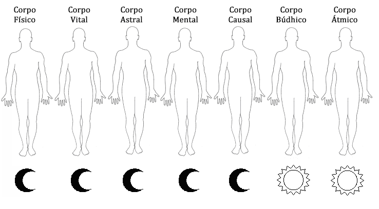
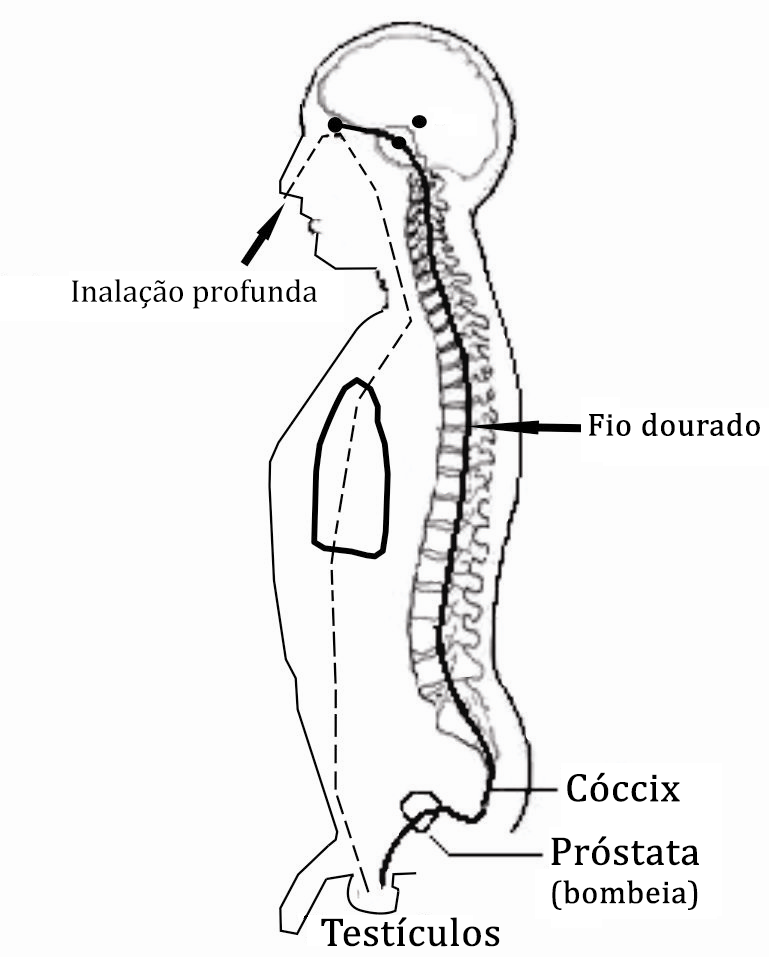
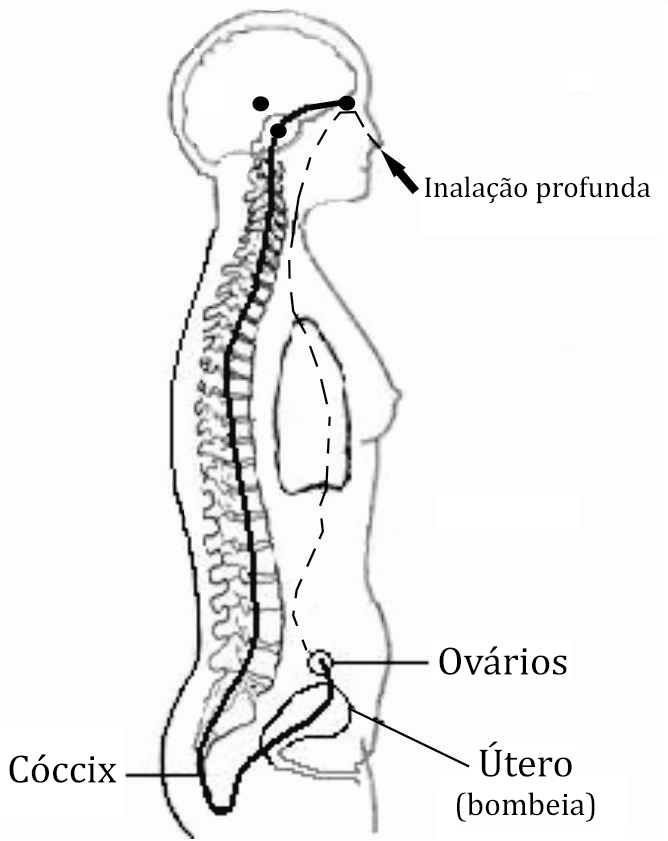

Conferência nº 10
OS SETE CORPOS
O objetivo desta conferência é que conheçamos cada um dos Sete Corpos, suas funções, desenvolvimento, natureza, leis que maneja e como podemos criá-los através do Supra-Sexo.
- Corpo Físico: possuímos nosso corpo Físico; vibra com a nota musical DO. Tem natureza celular, está regido por 48 leis. Forma o que chamamos nosso mundo exterior ou Terra. Se encontra na terceira dimensão, está relacionado com o elemento Terra e portanto com os Gnomos e Pigmeus. Relacionado com o Centro Sexual, maneja a Energia Criadora Sexual, que foi a que lhe deu sua origem. Trabalha com o Hidrogênio 48 por estar relacionado com as 48 Leis. Atualmente se encontra em condição lunar pela fornicação. Devemos regenerá-lo, pois já o possuímos.
- Corpo Etérico ou Vital: há um segundo corpo denominado Etérico ou Vital, vibra com a nota musical RE. É de natureza etérica, pois está constituído por quatro Éteres que são: Químico (assimilação), Lumínico (percepções sensoriais externas), Refletor (imaginação e vontade) e de Vida (reprodução). Está regido pelas mesmas 48 leis já que é a parte superior de nosso corpo físico e trabalha com o Hidrogênio 48. Maneja nossas Águas e por tanto as Ondinas e Nereidas da Água. Se encontra na quarta dimensão. Tem como assento físico o Centro Instintivo no osso Sacro. Produz a Energia Vital que é a Tetra-Sustentadora de energias e que é depositada no Centro Sexual para poder criar.
- Corpo Astral: temos também um princípio de corpo Astral, vibra com a nota musical MI, tem natureza molecular. É o primeiro princípio de matéria. Está sujeito a 24 leis e utiliza o Hidrogênio 24. Se encontra na quinta dimensão, Mundo Emocional. Maneja o nosso Fogo interior e está relacionado com as Salamandras do Fogo. Tem como assento em nosso interior o Centro Emocional na altura do plexo solar. Atualmente se encontra em condição lunar. Uns poucos seres humanos o possui e por tanto, devemos criá-lo.
- Corpo Mental: temos também um princípio de corpo Mental, por isso pensamos. Vibra com a nota musical FA. É de natureza atômica. Está sujeito a 12 leis e utiliza Hidrogênio 12. Encontra-se na quinta dimensão, Mundo Mental e trabalha com a Energia Mental. Maneja o Ar e por tanto está relacionado com os Silfos e Sílfides do Ar. Tem como assento em nosso interior o Centro Intelectual na altura do coração. Atualmente se encontra em condição lunar. Uns poucos seres humanos o possui e, portanto devemos criá-lo.
- Corpo Causal ou da Vontade: temos também um principio de corpo da Vontade ou Causal, vibra com a nota musical SOL. É de natureza eletrônica. Está sujeito a 6 leis. Encontra-se na sexta dimensão, Mundo das Causas. É nossa Alma Humana. Maneja o Éter. Tem como assento o Centro Motor na altura da laringe. Trabalha com a Energia Motriz. Utiliza hidrogênio 6. Atualmente se encontra em condição lunar. Uns poucos seres humanos o possui e, portanto devemos criá-lo.
- Corpo Búdhico ou da Consciência: temos um corpo Búdhico ou da Consciência, se encontra em condição solar, o que quer dizer que este corpo não caiu quando se deu a fornicação. Vibra com a nota musical LA. É de natureza magnética, está formado por prótons e é a razão de ser do Ser. Está sujeito a 6 leis. Encontra-se na sexta dimensão, Mundo Búdhico. É nossa Alma Divina. Maneja o Akasha. Tem seu assento material no Centro Emocional Superior, na glândula pituitária. Encontra-se levantado em todos os seres humanos.
- Corpo Átmico: temos um corpo Átmico, é nosso Íntimo. Encontra-se em condição Solar, o que quer dizer que este Corpo tampouco caiu. Vibra com a nota musical SI. É de natureza lumínica ou fotônica. Esta sujeito a 3 leis. Encontra-se na sétima dimensão ou Mundo Átmico. É o mais baixo que pode chegar o nosso Ser, que vem do mundo do Espírito. Está localizado no Centro Intelectual Superior, na glândula pineal.
Atualmente se encontra em condição lunar pela fornicação. Devemos regenerá-lo, pois já o possuímos.
Encontra-se levantado em todos os seres humanos.
COMO SE FABRICAM OS CORPOS EXISTENCIAIS DO SER?
Requisitos para o trabalho:
- É necessário conseguir um cônjuge estável do sexo oposto. Deve estar interessado em colaborar com o trabalho que vamos fazer, visto que não se pode estar mudando de cônjuge. No caso de ter que fazê-lo, teríamos que esperar um tempo mínimo de um ano (pausa magnética). Ao cônjuge tem que valorizar e querer, pois com este vamos fazer o Verdadeiro Amor. Uma obra de amor se alimenta com amor.
- Temos que valorizar a Energia Criadora Sexual e sua importância dentro da Obra. Na medida que compreendamos que essa Energia é nossa Mãe Divina, que esta encarregada de fazer toda a Criação, estas compreensões nos permitirão ir valorizando-a gradualmente até que eliminemos ao eu fornicário, pois a Castidade é o fundamento de toda a Obra.
- Ambos membros devem conhecer o trabalho que se vai fazer muito bem e ir aperfeiçoando cada dia.
- O segredo da prática consiste na conexão do Lingan masculino com o Yoni feminino (pênis/vagina) sem derramar a Energia Criadora Sexual.
Prática de Transmutação da Energia Sexual
- Conjuração do Belilim e Círculo Mágico de proteção (nunca pode omitir-se).
- Súplica de assistência ao Pai Interior e a Mãe Divina de cada um para a prática.
- Ascender o fogo com carícias e beijos até conseguir uma perfeita lubrificação da Yoni feminino para a penetração.
- Conexão ou penetração do Lingan na Yoni (pênis na vagina).
O processo respiratório tem três etapas:
- Inalação (20 segundos). Imaginar a entrada do ar aos pulmões e logo levá-lo até as glândulas sexuais. Recomenda-se chegar aos 20 segundos sempre.
- Retenção (20 segundos). Imaginar e sentir um fio de ouro que ascende pela coluna, vértebra por vértebra, desde o cóccix até a glabela.
- Exalação (20 segundos). Mantralizando lento e alongadamente IIIII, AAAA, OOOO, vogal por vogal.
Repete-se todo o procedimento respiratório para cada vogal.
- É absolutamente necessário que se deem três coisas dentro da prática:
- - Concentração: consciência centrada na ação.
- - Imaginação: para o sábio imaginar é ver e criar.
- - Vontade: a têmpera necessária para vencer o desejo.
- Este procedimento se repete quantas vezes for necessário.
- Retirar-se ou terminar a pratica de Sexo sem derramar a Energia Criadora Sexual
(quer dizer sem chegar ao orgasmo, nem ejacular).
Importante:
- Praticar uma só vez na noite. As glândulas trabalham alternadamente (uma por noite) e é necessário deixar passar um tempo mínimo de 20 horas para que comece a trabalhar a outra.
- Concentre-se cada um em seus genitais, pois cada qual trabalha com sua própria energia.
- Fazer movimentos suaves para não derramar a Energia, quer dizer, para que não ocorra uma caída sexual.
- Logo depois da prática esperar pelo menos duas horas para banhar-se.
- Se recomenda ter a alcova nupcial em muito boas condições de asseio e pulcritude.